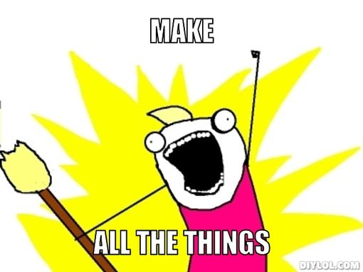
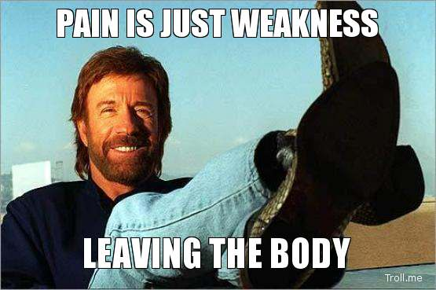

How to convince your boss to start using Elm?
2016-07-26 / Mats Stijlaart
Introduction
- Why?
- What I did
The problem
http://www.memegen.com
Cause 1: Elm is new
- Small
- Unknown
- Not proven (yet)
Cause 2: My boss runs an organisation
- Customers for over 10 years
- A third party approves releases
- Customer pays for working software
So why is this a problem?
- My boss does not sell technology.
- Customer is not gonna pay for refactoring
- 'I heard Angular and React are nice'
Solution
http://the-toast.net
The Arguments
You are the tech guy/girl
- Give examples
- Be enthousiastic
- If your boss is a tech person, send him some talks
- Your boss should trust you
Everything comes and goes
https://www.pinterest.com
- What is the oldest front-end technology that you run?
- Easier to choose for new things
- 'Is Elm gonna make it?' becomes less relevant
Batteries included
- HTML/CSS/JS
- 1 websocket library
Community maintaince the main packages

http://diylol.com/meme-generatorStable software
https://blogs.thegospelcoalition.org
- No runtime exceptions
- Stable fundament for a ecosystem
Points of Pain

http://www.whattoexpect.comUpgrades
- All or nothing (also a good thing)
-
You just have to rip the bandaid of.
Compare this to Angular, React, ExtJS - Outdated docs/examples
Human Resouces
- Yet
- May be a good choice for a startup elm-discuss: comment by Max Goldstein
- IMHO is easier to learn Elm than learn Javascript well
Tooling
- Build it yourself mentality. Get your hands dirty.
- Run with maven for example
How to tackle it?
Start simple
Why?
- Small investment, you can still drop it
- Does not have a lot of integration, thus easy to setup
- No JS interop, no sigle page app.
Start building, test and ship!
- Evaluate the process.
- Is Elm working for me?
- Important to redo stuff you have learned from.
Integrate with the existing project
- Make it work!
- Write/update the README!
- Colleagues start trusting it on their machine.
Become the advocate
{kind=link}
- Pairing with colleagues
- Give a talk in the office
Let an intern work on the Elm code

Adapt or die
If your boss/colleagues do not want to change...
Summarise
- Start simple
- Show that it works
- Take responsibility
- Push it